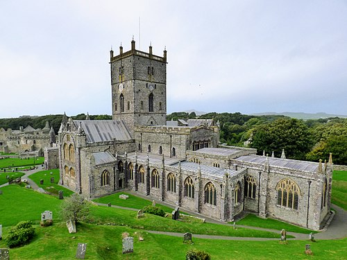

St Davids
St Davids is the smallest city in the United Kingdom.
It is famous for St Davids Cathedral and the beautiful
coastline around it.

Interesting Facts About St Davids
- St Davids is the smallest city in Britain.
- It is named after the patron saint of Wales.
- The nearby coastline is part of Pembrokeshire Coast National Park.